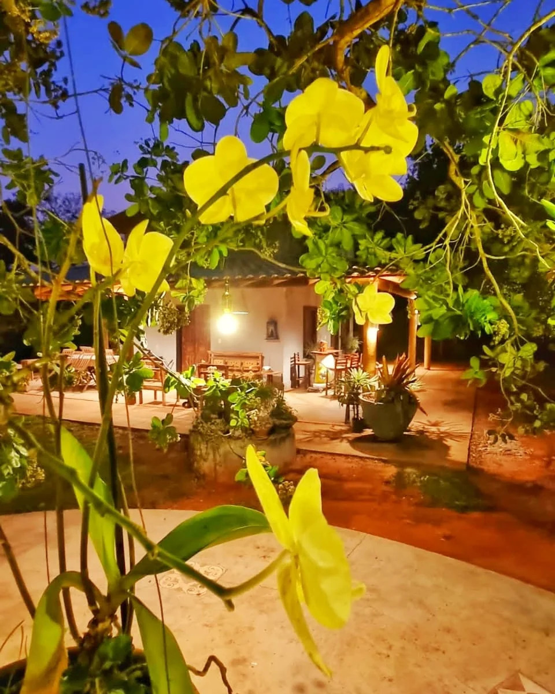
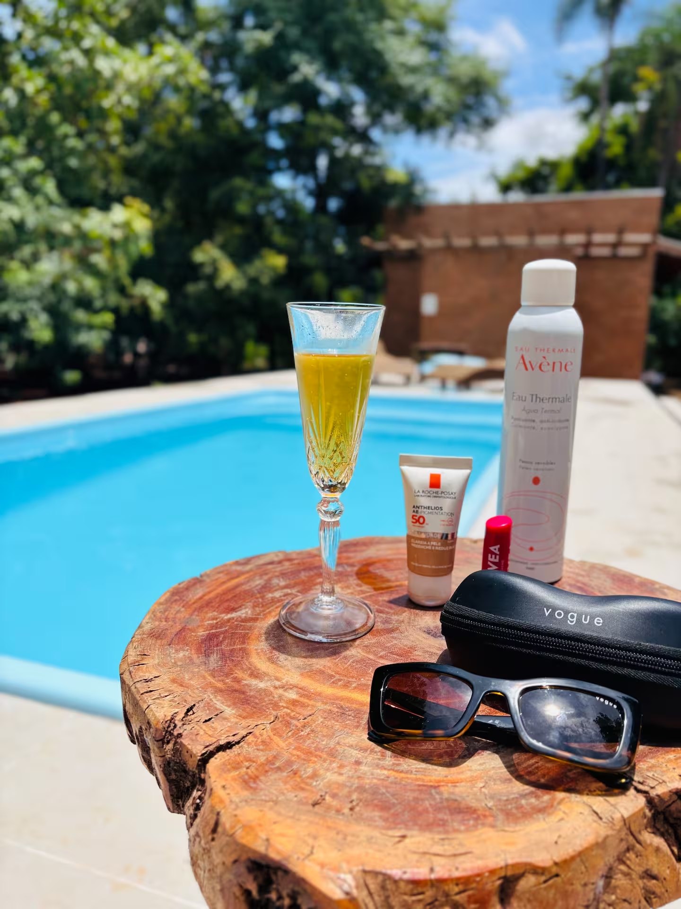
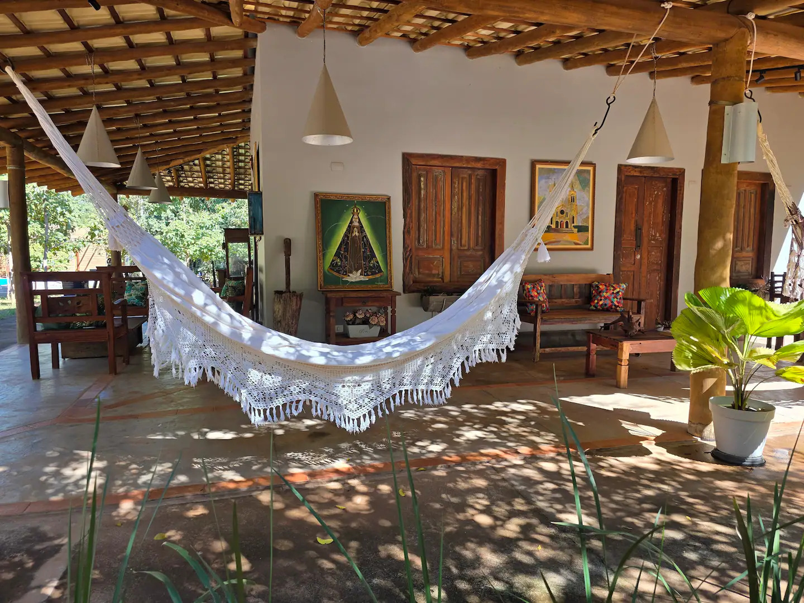

Bem-vindo(a) ao Recanto dos Ipês!

É uma alegria receber você no Recanto dos Ipês, em Piraputanga! Aqui, a natureza se encontra com o aconchego, a tranquilidade e a beleza única do Pantanal.
Este guia foi preparado com carinho para que sua estadia seja inesquecível. Reunimos dicas de passeios, gastronomia, cultura, história e tudo o que a nossa região tem de melhor.

Piscina

Área de Convivência
"Sinta-se em casa e aproveite cada momento!" — Você não está apenas hospedado em Piraputanga, você está vivendo um dos lugares mais especiais do Mato Grosso do Sul.
Voltar ao menu